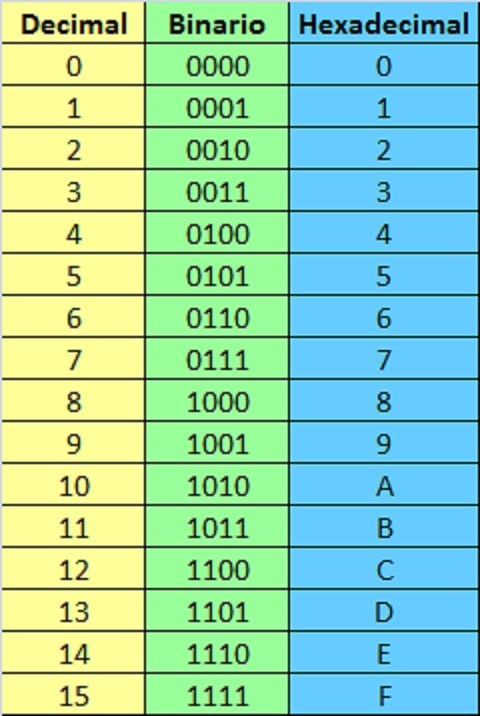
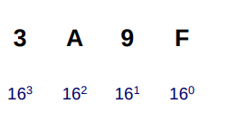
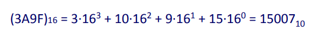
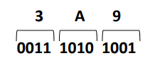
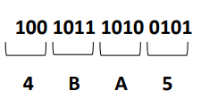
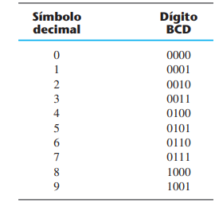
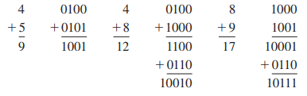
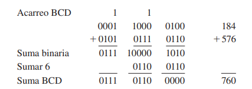
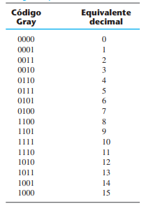
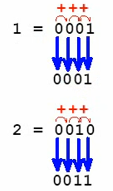
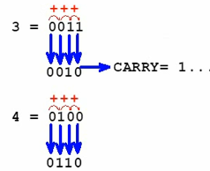
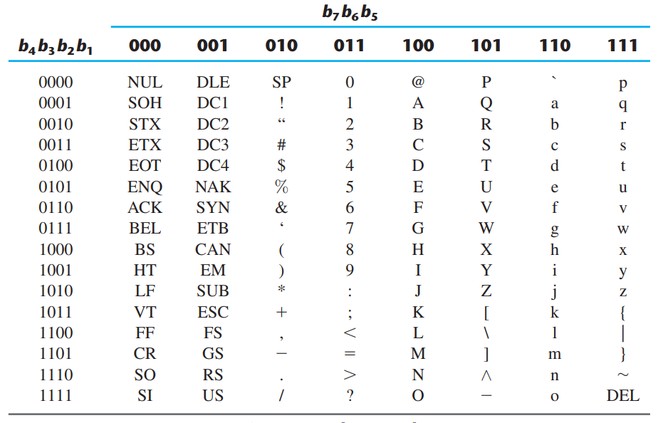
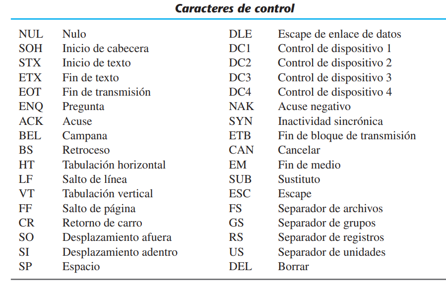
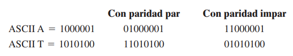
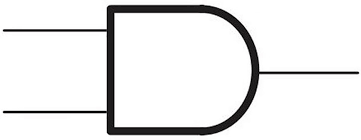
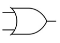
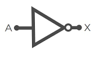
Se representa con un punto u omitiendo el operador. Por ejemplo, x·y=z o xy=z se lee “x AND y es igual a z”: z=1 si y sólo si x=1 y y=1; de lo contrario, z=0.
Se representa con un signo más. Por ejemplo, x+y=z se lee “x OR y es igual a z”: z=1 si x=1 o si y=1 o si ambas lo son. Si x=0 y y=0, entonces z=0.
Se representa como x’=z y se lee “no x es igual a z”: z es lo contrario de x. Si x=1, entonces z=0; si x=0, entonces z=1.
Recordemos que x, y y z son variables binarias y sólo pueden valer 1 o 0.
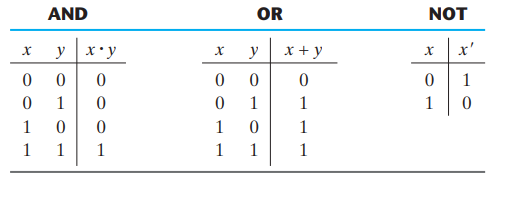
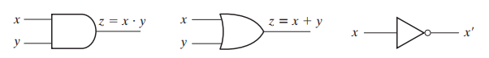
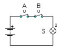
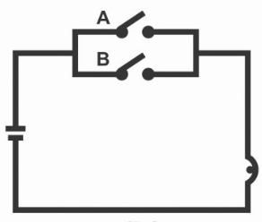
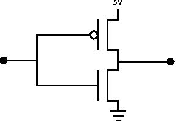
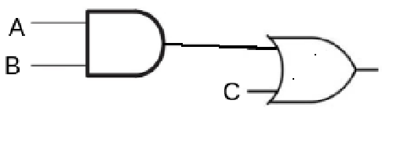